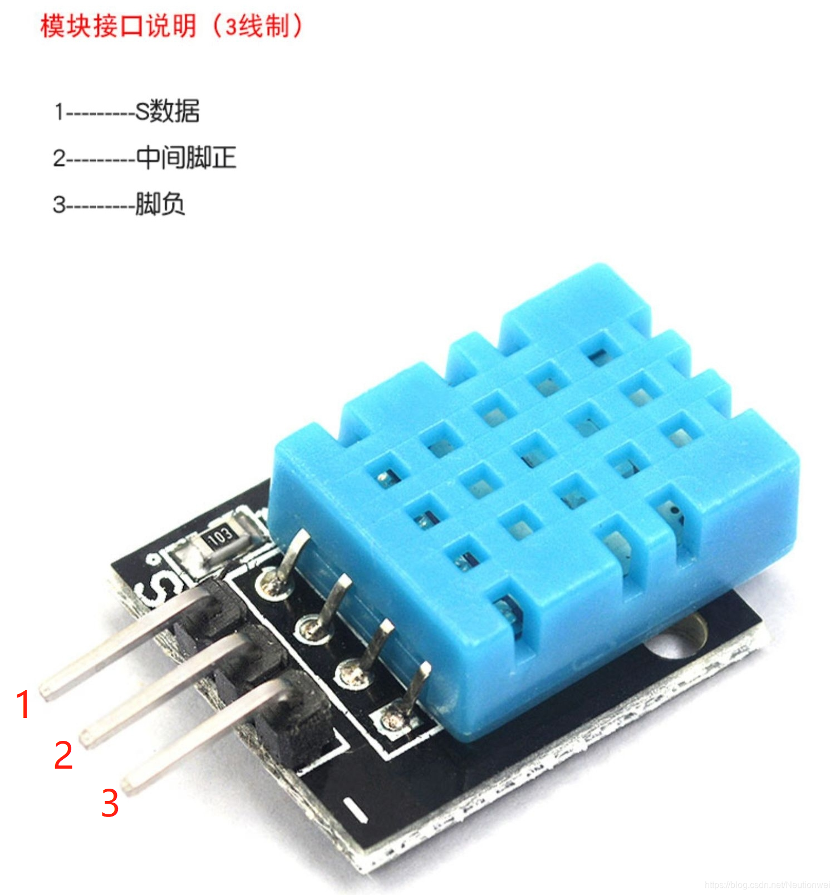
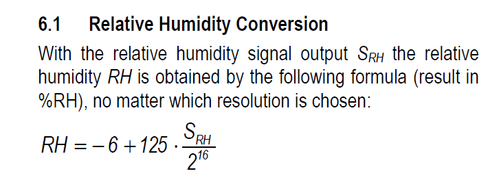
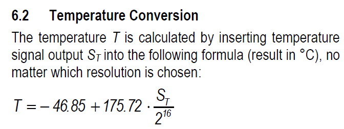

I2C
I²C（Inter-Integrated Circuit）字面上的意思是集成电路之间，它其实是I²C Bus简称。I2C总线类型是由飞利浦半导体公司在八十年代初设计出来的一种简单、双向、二线制、同步串行总线，主要是用来连接整体电路(ICS)
I2C协议是多个设备仅使用两条线（时钟和数据线）相互通信的一种方式。任何设备都可以是控制I2C时钟和数据线以与其他设备通信的主设备。 每个I2C器件都分配有一个唯一的地址，用于在读写操作期间识别它。当设备看到其在I2C总线上发送的地址时，它会响应请求，当它看到不同的地址时，它会忽略它。 使用唯一地址，许多设备可以共享相同的I2C总线而不会产生干扰。
在使用掌控板，您可以使用 I2C类 函数与I2C总线上的设备进行交互。在大多数情况下，您将充当I2C“主设备”，可以与其他I2C设备读写数据。 您还可以充当I2C“从属”或外设，它们分配了一个地址，可以监听和响应来自其他I2C设备的请求。
Master
大部分I2C通讯类模块，操作方法类似。mPython掌控板充当I2C主设备，模块作为从机设备，响应主机请求。 以下SHT20模块作为演示说明，如何读取从机设备数据。

读取SHT20温度函数:
def sht20_temperature():
i2c.writeto(0x40,b'\xf3')
sleep_ms(70)
t=i2c.readfrom(0x40, 2)
return -46.86+175.72*(t[0]*256+t[1])/65535
i2c.writeto(addr, buf) 为I2C写操作函数，向 I2C设备为 addr ，发送 buf 缓存字节。掌控板需要向SHT20发送 0xf3 字节，告诉它，我需要读取温度数据，延时70毫秒后
再向SHT20读取使用2字节数据。读取操作使用 i2c.readfrom(addr, nbytes) ，nbytes 为读取字节数。
读取到2字节数据后，还需要根据sht20手册说明，做数据处理转换温度单位，转换公式如下图。
{kind=link}

SHT20温度转换公式
{kind=link}

SHT20湿度转换公式
湿度读取的方式也类似，首先发送“0xf5”字节，告诉SHT20我要读取湿度数据，最后按公式转换湿度单位:
def sht20_humidity():
i2c.writeto(0x40,b'\xf5')
sleep_ms(25)
t=i2c.readfrom(0x40, 2)
return -6+125*(t[0]*256+t[1])/65535
提示
有关更多的I2C操作方法，请查阅 I2C类 章节。
完整SHT20示例:
1from mpython import * # 导入mpython 所有对象
2
3def sht20_temperature():
4 """获取SHT20模块的温度值
5 返回:温度
6 """
7 i2c.writeto(0x40,b'\xf3') # 向0x40地址即SHT20写字节“0xf3”
8 sleep_ms(70) # SHT20测量需要时间，须等待
9 t=i2c.readfrom(0x40, 2) # 从x40地址即SHT20，读取2字节数据
10 return -46.86+175.72*(t[0]*256+t[1])/65535 # 对读取数据进行温度转换处理 T=-46.86+175.72*St/2^16
11
12def sht20_humidity():
13 """获取SHT20模块的湿度值
14 返回:湿度
15 """
16 i2c.writeto(0x40,b'\xf5') # 向0x40地址即SHT20写字节“0xf5”
17 sleep_ms(25) # SHT20测量需要时间，须等待
18 t=i2c.readfrom(0x40, 2) # 从x40地址即SHT20，读取2字节数据
19 return -6+125*(t[0]*256+t[1])/65535 # 对读取数据进行湿度转换处理 RH=-6+125*Srh/2^16
20
21while True:
22 temper=sht20_temperature()
23 humid=sht20_humidity()
24 print("sht20 temperature: %0.1fC sht20 humidity: %0.1f%%" %(temper,humid))
25 print("温度:%0.1f度, 湿度:%d%%" %(temper,humid))
26 sleep(1)